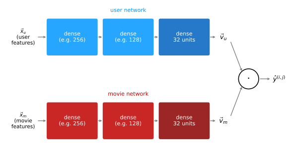

Content-Based Filtering
machine-learning
unsupervised-learning
A second recommender algorithm: matching user features to item features with two neural networks whose outputs meet in a dot product, scaling to huge catalogs with retrieval and ranking, the ethics of recommenders, and the TensorFlow implementation.
Collaborative filtering recommends items based on the ratings of users who gave ratings similar to yours, and its limitations, the cold start problem and the inability to use side information, were exactly what it could not fix on its own. This page develops the algorithm that addresses them: content-based filtering, which recommends items by matching features of the user to features of the item, and which, built with neural networks the way this page builds it, is the approach behind many important commercial state-of-the-art recommender systems today.
Collaborative versus Content-Based Filtering
The two approaches answer the same question, “what should this user see next?”, from different directions:
- Collaborative filtering: recommend items based on ratings of users who gave similar ratings as you. The only input is the ratings matrix.
- Content-based filtering: recommend items based on features of the user and features of the item, using those features to decide which users and items are a good match for each other.
The bookkeeping notation carries over unchanged: \(r(i,j) = 1\) still marks that user \(j\) has rated item \(i\), and \(y^{(i,j)}\) is still that rating where it exists. What is new is the pair of feature vectors that content-based filtering requires. For movie recommendations, features might look like this:
User features, collected into a vector \(\vec{x}_u^{(j)}\) for user \(j\):
- Age of the user.
- Gender, as a one-hot feature (like the one-hot encoding used with decision trees), for example male / female / unknown.
- Country, a one-hot feature with about 200 possible values.
- Past behaviors, for example a thousand features recording which of the top thousand movies in the catalog the user has watched.
- Average rating per genre that the user has given, across all the romance movies the user has rated, what was the average rating, and likewise for action and every other genre. Notice this feature depends on the user’s ratings, and there is nothing wrong with that; a feature vector built partly from the user’s own ratings is a completely fine way to describe a user.
Movie features, collected into a vector \(\vec{x}_m^{(i)}\) for movie \(i\):
- Year of the movie.
- Genre or genres of the movie, if known.
- Critic reviews, one or several features capturing what critics said.
- Average rating of the movie, again a feature that depends on ratings, possibly broken out per country or per user demographic.
The two vectors can be wildly different sizes, the user features might be 1500 numbers while the movie features are just 50, and that is fine.
From \(\vec{w}, \vec{x}\) to \(\vec{v}_u, \vec{v}_m\)
Collaborative filtering predicted user \(j\)’s rating of movie \(i\) as \(\vec{w}^{(j)} \cdot \vec{x}^{(i)} + b^{(j)}\). Content-based filtering changes the cast of characters. First, drop \(b^{(j)}\) entirely, it turns out this does not hurt performance at all. Then replace both remaining pieces with new vectors:
\[ \hat{y}^{(i,j)} = \vec{v}_u^{(j)} \cdot \vec{v}_m^{(i)} \]
where \(\vec{v}_u^{(j)}\) (v for vector, u for user) is a list of numbers computed from the features \(\vec{x}_u^{(j)}\) of user \(j\), and \(\vec{v}_m^{(i)}\) (m for movie) is a list of numbers computed from the features \(\vec{x}_m^{(i)}\) of movie \(i\).
To see why a dot product between such vectors is a sensible prediction, imagine the learned vectors turned out to be interpretable. Say \(\vec{v}_u^{(j)} = (4.9,\ 0.1,\ \dots)\), where the first number captures how much this user likes romance movies and the second how much they like action, and \(\vec{v}_m^{(i)} = (4.5,\ 0.2,\ \dots)\), where the numbers capture how much this movie is a romance or an action movie. Multiplying element-wise and summing rewards every dimension where the user’s taste and the movie’s content line up, a big number times a big number, and ignores dimensions where either is near zero.
One constraint makes this work: although \(\vec{x}_u\) and \(\vec{x}_m\) can have very different sizes, \(\vec{v}_u\) and \(\vec{v}_m\) must have the same dimension, say 32 numbers each, or the dot product is not even defined. So the challenge is: given user features \(\vec{x}_u^{(j)}\), how do you compute a compact vector \(\vec{v}_u^{(j)}\) that represents the user’s preferences, and given movie features \(\vec{x}_m^{(i)}\), how do you compute \(\vec{v}_m^{(i)}\)? That is what the next section answers.
Review Questions
1. In one sentence each, how does collaborative filtering decide what to recommend, and how does content-based filtering decide?
TipAnswer
Collaborative filtering recommends items based on ratings from users who gave ratings similar to yours, working from the ratings matrix alone. Content-based filtering recommends items by matching features of the user against features of the item to find good user-item pairings.
1. Give an example of a user feature that depends on the user’s own ratings. Is such a feature allowed?
TipAnswer
The average rating the user has given per genre, for example the average across all romance movies they have rated. Yes, it is allowed, constructing a feature vector that depends on the user’s ratings is a completely fine way to describe a user, and it can be a powerful feature.
1. \(\vec{x}_u\) might have 1500 numbers and \(\vec{x}_m\) only 50. Which pair of vectors must nonetheless have matching sizes, and why?
TipAnswer
The computed vectors \(\vec{v}_u\) and \(\vec{v}_m\) must have the same dimension (say, 32 each), because the prediction is their dot product \(\vec{v}_u^{(j)} \cdot \vec{v}_m^{(i)}\), which is only defined for vectors of equal length. The raw feature vectors they are computed from are free to differ in size.
Deep Learning for Content-Based Filtering
A good way to turn features into those matching vectors is deep learning, and this architecture is how many state-of-the-art commercial content-based systems are built. Two neural networks do the job:
- The user network takes the user features \(\vec{x}_u\) as input (age, gender, country, and so on) and, through a few dense hidden layers, outputs \(\vec{v}_u\). The unusual part: the output layer has 32 units, not 1, so the network’s output is a whole vector, not a single number.
- The item network (here, the movie network) takes \(\vec{x}_m\) as input and outputs \(\vec{v}_m\), also 32 numbers.
The two networks can have completely different hidden architectures, different numbers of layers, different units per layer; only the output layers must share the same dimension. Drawn as one diagram, the two networks run in parallel and meet at a dot product:
For binary labels (did the user engage or not), the same one change as in collaborative filtering applies: pass the dot product through the sigmoid, \(g\big(\vec{v}_u^{(j)} \cdot \vec{v}_m^{(i)}\big)\), and read it as the probability that \(y^{(i,j)} = 1\).
One Cost Function for Both Networks
This model has a lot of parameters, every layer of both networks has its usual weights, but there is no separate training procedure for the user and movie networks. A single cost function judges them jointly, and it is nearly the same one collaborative filtering used, a sum over every pair with a label:
\[ J = \sum_{(i,j)\,:\,r(i,j)=1} \left( \vec{v}_u^{(j)} \cdot \vec{v}_m^{(i)} - y^{(i,j)} \right)^2 \;+\; \text{(NN regularization term)} \]
Different parameter values produce different vectors \(\vec{v}_u\) and \(\vec{v}_m\), so minimizing \(J\) with gradient descent or any other optimizer tunes all the parameters of both networks toward vectors whose dot products match the observed ratings. Adding the usual neural network regularization term keeps the parameters small.
Finding Similar Items, Again
Just as collaborative filtering’s learned features enabled related-item lookup, the trained movie network gives every movie a description vector, and similar movies sit close together: movies \(k\) similar to movie \(i\) are those with small
\[ \left\lVert \vec{v}_m^{(k)} - \vec{v}_m^{(i)} \right\rVert^2 \]
One practical note that becomes important for scaling: this can all be pre-computed ahead of time. A compute server can run overnight, go through the entire catalog, and store the 10 or 20 most similar movies for every movie, so that when a user browses a movie tomorrow, the “similar to this” list is a plain table lookup, no neural network inference at serving time.
NoteTwo networks, one system
Back when decision trees were compared with neural networks, one advantage claimed for neural networks was that several of them can be plugged together and trained as one larger system. This architecture is exactly that advantage in action: a user network and a movie network, trained in concert through a single cost function, joined by nothing more than a dot product. One practical caveat from the trenches: developers building these systems commercially often spend much of their time carefully engineering the features fed into the two networks, and that investment tends to pay off.
The one limitation of the algorithm as described so far: with a large catalog, running it naively is computationally very expensive. Every prediction requires neural network inference, and a big service has far too many items to score them all for every user. The fix is next.
Review Questions
1. What is unusual about the output layers of the user and item networks, compared to the neural networks used for classification earlier in the course?
TipAnswer
They output a whole vector, for example 32 units, rather than a single unit. The networks’ job is not to predict a label directly but to compute the description vectors \(\vec{v}_u\) and \(\vec{v}_m\), whose dot product then forms the prediction. The two networks’ hidden layers can differ freely; only the output dimensions must match.
1. How are the parameters of the two networks trained, and what would be wrong with training each network separately?
TipAnswer
A single cost function sums the squared error \(\big(\vec{v}_u^{(j)} \cdot \vec{v}_m^{(i)} - y^{(i,j)}\big)^2\) over all rated pairs (plus regularization), and gradient descent tunes all parameters of both networks at once to minimize it. There is no sensible separate target for either network alone, a “correct” \(\vec{v}_u\) is only defined by how well its dot products with the \(\vec{v}_m\) vectors predict ratings, so the networks can only be judged, and trained, jointly.
1. Why is it significant that per-movie similarity lists can be pre-computed overnight?
TipAnswer
Because it moves the expensive part, computing \(\vec{v}_m\) for every movie and finding the nearest vectors, out of the moment a user is on the site. At serving time, showing “movies similar to this one” is a lookup-table read, no inference needed. This pre-computation idea is also a key building block for scaling recommenders to huge catalogs.
Recommending from a Large Catalogue
A movie streaming site may have thousands of movies; an ad system, millions of ads; a music service, tens of millions of songs; a large shopping site, tens of millions of products. When a user shows up, their features \(\vec{x}_u\) are available, but feeding millions of items through the item network and computing millions of dot products, every single time any user loads a page, is computationally infeasible.
Large-scale recommender systems handle this with two steps, retrieval and ranking.
Retrieval
The retrieval step quickly generates a large list of plausible candidates, aiming for broad coverage rather than precision. It is fine if the list includes items the user will not like; the goal is to make sure enough good candidates are in there somewhere. For a movie site, retrieval might assemble:
- For each of the last 10 movies the user watched, the 10 most similar movies, exactly the pre-computed \(\lVert \vec{v}_m^{(k)} - \vec{v}_m^{(i)} \rVert^2\) lookup from the previous section, so this costs a table read, not a network inference.
- The top 10 movies in each of the user’s 3 most-watched genres, say romance, comedy, and historical drama.
- The top 20 movies in the user’s country.
Combine these into one list, remove duplicates, and remove movies the user has already watched or purchased. The result is maybe 100 or a few hundred plausible candidates, produced very fast.
Ranking
The ranking step takes that shortlist and scores it properly with the learned model: feed the user vector and each retrieved movie’s vector through the network, compute the predicted rating for every pair, and display the list sorted by predicted rating.
One additional optimization makes ranking fast too. If \(\vec{v}_m\) has been pre-computed for every movie in the catalog, then when a user arrives, only the user network needs to run, once, to get \(\vec{v}_u\). Ranking a few hundred retrieved movies is then just a few hundred dot products against stored vectors, quick enough to do while the page loads.
How Many Items to Retrieve?
Retrieving more items tends to improve results, the shortlist is more likely to contain the true best recommendations, but makes the system slower. The way to choose between retrieving 100, 500, or 1000 items is to run offline experiments: check whether retrieving more items actually causes the model’s predictions for the displayed items to improve (for example, whether the estimated \(P(y^{(i,j)} = 1)\) of what ends up recommended gets meaningfully higher). If going from 100 to 500 retrieved items yields noticeably more relevant recommendations, the extra latency may be worth it. Together, retrieval for speed and ranking for accuracy let recommenders serve enormous catalogs with both fast and high-quality results.
Review Questions
1. Why can’t a large service simply run the neural network over every item in the catalog each time a user arrives?
TipAnswer
Catalogs run to millions or tens of millions of items (ads, songs, products), and running item-network inference plus a dot product for every one of them, on every page load, for every user, is computationally infeasible. The cost of scoring the full catalog per request is what the retrieval-plus-ranking split exists to avoid.
1. Describe what the retrieval step and the ranking step each do, and what each is optimized for.
TipAnswer
Retrieval quickly assembles a broad list of a few hundred plausible candidates from cheap sources, pre-computed similar-item lookups for recently watched movies, top movies in the user’s favorite genres, top movies in their country, then deduplicates and drops already-seen items; it is optimized for speed and coverage, and false positives are acceptable. Ranking then scores just that shortlist with the learned model and sorts by predicted rating; it is optimized for accuracy, and it is affordable because it runs on hundreds of items, not millions.
1. With \(\vec{v}_m\) pre-computed for the whole catalog, how much neural network inference happens at serving time, and how would you decide how many items to retrieve?
TipAnswer
One inference: the user network runs once to produce \(\vec{v}_u\), and everything after that is dot products against stored movie vectors. The retrieval count (100 versus 500 versus 1000) is chosen by offline experiments, measuring whether retrieving more items leads to meaningfully more relevant recommendations, and trading that gain against the added slowness.
Ethical Use of Recommender Systems
Recommender systems are enormously profitable, and some of their use cases have left people and society worse off. The choices are worth examining, because “what should the system optimize?” is a genuine design decision. Consider a spectrum of goals a recommender might be configured for:
- Recommend movies the user is most likely to rate 5 stars. Seems fine, this is showing users what they will enjoy.
- Recommend products the user is most likely to purchase. Also quite reasonable.
- Show ads most likely to be clicked, weighted by the advertiser’s bid, since ad revenue depends on clicks times price-per-click. Profit-maximizing, with possible negative implications.
- Recommend products that generate the largest profit for the company, ranking the high-margin item above the most relevant one. Many sites do this today, and the user has no way to tell.
- Maximize user engagement, the total time spent on the site, since more time means more ads shown.
The first two seem innocuous; the last three may be fine, or may be genuinely problematic.
The ad-bidding amplifier. The advertising auction can amplify the best businesses, and the most harmful ones. In the travel industry, a company that gives users genuinely good trips tends to be more profitable, can therefore bid more for ads, gets more traffic, serves more users well, and becomes more profitable still, a virtuous cycle that statistically helps good companies. Now run the same loop on the payday loan industry, which charges extremely high interest rates, often to low-income individuals: the company most efficient at squeezing customers for every dollar is the most profitable, so it bids highest, so it gets the most traffic, so it can exploit even more people. The identical feedback loop amplifies the most exploitative player. There is no easy solution; one partial amelioration is refusing to sell ads to exploitative businesses, though defining “exploitative” precisely is itself a very difficult question.
Engagement maximization. It has been widely reported that maximizing watch time and time-on-site has led large social media and video platforms to amplify conspiracy theories and hate and toxicity, because that content is highly engaging, even when amplifying it harms individuals and society. A partial, imperfect amelioration is filtering out problematic content, hate speech, fraud, scams, certain violent content, though what exactly to filter is again surprisingly tricky to pin down, and remains something companies, individuals, and governments continue to wrestle with.
Transparency. Many users assume the app is recommending things it thinks they will like, and do not realize the ranking may instead be maximizing the company’s profit. Being transparent with users about the criteria behind recommendations is not always easy, but it builds trust and pushes these systems toward doing more good.
Anyone building a recommender, or any learning system, should think through not only the benefit it creates but the harm it could do, invite diverse perspectives and open debate, and only build things that leave people and society better off.
Review Questions
1. Rank these recommender goals from least to most ethically fraught, and say why: maximize engagement; recommend movies likely to be rated 5 stars; rank products by company profit.
TipAnswer
Recommending movies likely to be rated 5 stars is the most innocuous, it directly serves the user’s own enjoyment. Ranking products by company profit is more fraught: the user assumes relevance but is being shown high-margin items, without transparency about the criteria. Maximizing engagement has proven the most harmful in practice, since highly engaging content includes conspiracy theories and toxic material, which the system then amplifies at scale.
1. Explain how the same ad-auction feedback loop can help society in one industry and harm it in another.
TipAnswer
The loop is: more profitable → can bid more for ads → more traffic → more customers → more profitable. In travel, profitability tends to come from serving users well, so the loop amplifies good companies, a virtuous cycle. In payday lending, profitability comes from squeezing customers most efficiently, so the very same loop sends the most traffic to the most exploitative company. The auction amplifies whatever makes a business profitable, regardless of whether that thing is good for users.
1. Name two ameliorations discussed for recommender harms, and the shared difficulty both run into.
TipAnswer
Refusing to sell ads to exploitative businesses, and filtering out problematic content such as hate speech, fraud, and scams. Both run into the same difficulty: drawing the definitional line, deciding precisely what counts as “exploitative” or “problematic” is itself a hard, contested problem that requires ongoing debate among companies, individuals, and governments.
TensorFlow Implementation
The two-tower architecture maps onto TensorFlow neatly, and most of the pieces are familiar from the neural network pages. Each tower is an ordinary Sequential stack of dense layers, relu activations for the hidden layers, and a final layer of 32 units with no activation, since it outputs the raw description vector. The new functions appear on the numbered lines:
import tensorflow as tf
num_user_features = 14
num_item_features = 16
num_outputs = 32
user_NN = tf.keras.models.Sequential([
tf.keras.layers.Dense(256, activation="relu"),
tf.keras.layers.Dense(128, activation="relu"),
tf.keras.layers.Dense(num_outputs),
])
item_NN = tf.keras.models.Sequential([
tf.keras.layers.Dense(256, activation="relu"),
tf.keras.layers.Dense(128, activation="relu"),
tf.keras.layers.Dense(num_outputs),
])
1input_user = tf.keras.layers.Input(shape=(num_user_features,))
vu = user_NN(input_user)
2vu = tf.keras.layers.UnitNormalization(axis=1)(vu)
input_item = tf.keras.layers.Input(shape=(num_item_features,))
vm = item_NN(input_item)
vm = tf.keras.layers.UnitNormalization(axis=1)(vm)
3output = tf.keras.layers.Dot(axes=1)([vu, vm])
4model = tf.keras.Model([input_user, input_item], output)
5cost_fn = tf.keras.losses.MeanSquaredError()
model.summary()- 1
-
tf.keras.layers.Inputdeclares an entry point for data and its shape. Feeding it throughuser_NNwires the user features into the tower that computes \(\vec{v}_u\). - 2
-
tf.keras.layers.UnitNormalizationrescales the vector to have length one (normalizing its l2 norm). This extra step is not required by the math above, but it makes the algorithm work a bit better in practice. The course’s original code callstf.linalg.l2_normalizehere, which does the same thing; newer versions of Keras require the layer form when building a model this way. - 3
-
tf.keras.layers.Dotis a special Keras layer, whereDensecomputes activations,Dotjust takes the dot product of the two vectors handed to it, producing the prediction \(\vec{v}_u \cdot \vec{v}_m\). - 4
-
tf.keras.Modelties everything into one trainable model by declaring its inputs (the user features and the item features) and its output (the dot product defined just above). - 5
-
tf.keras.losses.MeanSquaredErroris the squared-error cost from the formula earlier, ready for training the whole two-tower model end to end.
Model: "functional_2"
┏━━━━━━━━━━━━━━━━━━━━━┳━━━━━━━━━━━━━━━━━━━┳━━━━━━━━━━━━┳━━━━━━━━━━━━━━━━━━━┓ ┃ Layer (type) ┃ Output Shape ┃ Param # ┃ Connected to ┃ ┡━━━━━━━━━━━━━━━━━━━━━╇━━━━━━━━━━━━━━━━━━━╇━━━━━━━━━━━━╇━━━━━━━━━━━━━━━━━━━┩ │ input_layer │ (None, 14) │ 0 │ - │ │ (InputLayer) │ │ │ │ ├─────────────────────┼───────────────────┼────────────┼───────────────────┤ │ input_layer_2 │ (None, 16) │ 0 │ - │ │ (InputLayer) │ │ │ │ ├─────────────────────┼───────────────────┼────────────┼───────────────────┤ │ sequential │ (None, 32) │ 40,864 │ input_layer[0][0] │ │ (Sequential) │ │ │ │ ├─────────────────────┼───────────────────┼────────────┼───────────────────┤ │ sequential_1 │ (None, 32) │ 41,376 │ input_layer_2[0]… │ │ (Sequential) │ │ │ │ ├─────────────────────┼───────────────────┼────────────┼───────────────────┤ │ unit_normalization │ (None, 32) │ 0 │ sequential[0][0] │ │ (UnitNormalization) │ │ │ │ ├─────────────────────┼───────────────────┼────────────┼───────────────────┤ │ unit_normalization… │ (None, 32) │ 0 │ sequential_1[0][… │ │ (UnitNormalization) │ │ │ │ ├─────────────────────┼───────────────────┼────────────┼───────────────────┤ │ dot (Dot) │ (None, 1) │ 0 │ unit_normalizati… │ │ │ │ │ unit_normalizati… │ └─────────────────────┴───────────────────┴────────────┴───────────────────┘
Total params: 82,240 (321.25 KB)
Trainable params: 82,240 (321.25 KB)
Non-trainable params: 0 (0.00 B)
The summary shows the two Sequential towers as single rows feeding the Dot layer, one trainable model, tens of thousands of parameters across both towers, judged by a single mean squared error. Unlike collaborative filtering, which needed a custom training loop because its cost did not fit the layer paradigm, this architecture is built entirely from standard layers, so the ordinary compile and fit workflow trains it. The practice lab puts these snippets to work in a full content-based recommender.
Review Questions
1. Why does this model train with the ordinary compile/fit workflow when collaborative filtering needed a custom training loop?
TipAnswer
Because every piece of the two-tower architecture is a standard Keras layer: two Sequential stacks of Dense layers joined by a Dot layer, wrapped in a Model with a built-in MeanSquaredError loss. Collaborative filtering’s cost function, with its ratings mask and jointly-learned features, did not fit any standard layer type, so it needed the gradient-tape loop instead.
1. What does the l2 normalization step (UnitNormalization, or tf.linalg.l2_normalize in the course’s code) do to \(\vec{v}_u\) and \(\vec{v}_m\), and is it required?
TipAnswer
It rescales each vector so its length (l2 norm) equals one, leaving only its direction. It is not required by the algorithm as derived, the dot product is defined either way, but normalizing both vectors makes the algorithm work a bit better in practice, so the implementation includes it.
1. The final Dense layer of each tower has 32 units and no activation function. Why no activation?
TipAnswer
The output layer’s job is to produce the raw description vector, \(\vec{v}_u\) or \(\vec{v}_m\), whose entries may need to be any real numbers, positive or negative, large or small. An activation like relu or sigmoid would clip or squash those values. Any nonlinearity the model needs lives in the hidden layers’ relu activations; the final layer just projects down to the shared 32-dimensional space.
That wraps up recommender systems: collaborative filtering learned from ratings alone, content-based filtering matched user and item features through two neural networks, retrieval and ranking scaled it to real catalogs, and the ethics section asked what these systems should optimize. The remaining part of the course turns to a different frontier altogether, reinforcement learning, culminating in landing a simulated moon lander.